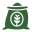
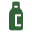

La Graine
La graine est un aliment complet, particulièrement intéressant pour ses protéines, ses acides gras essentiels et sa richesse en minéraux

Profil nutritionnel complet : riche en protéines, fibres et lipides

Apport variable selon la forme du produit : plus la teneur en farine augmente, plus la concentration en protéines est élevée mais la fibre et les oméga diminuent

Huile de chanvre : un atout particulier -> riche en acides gras polyinsaturés